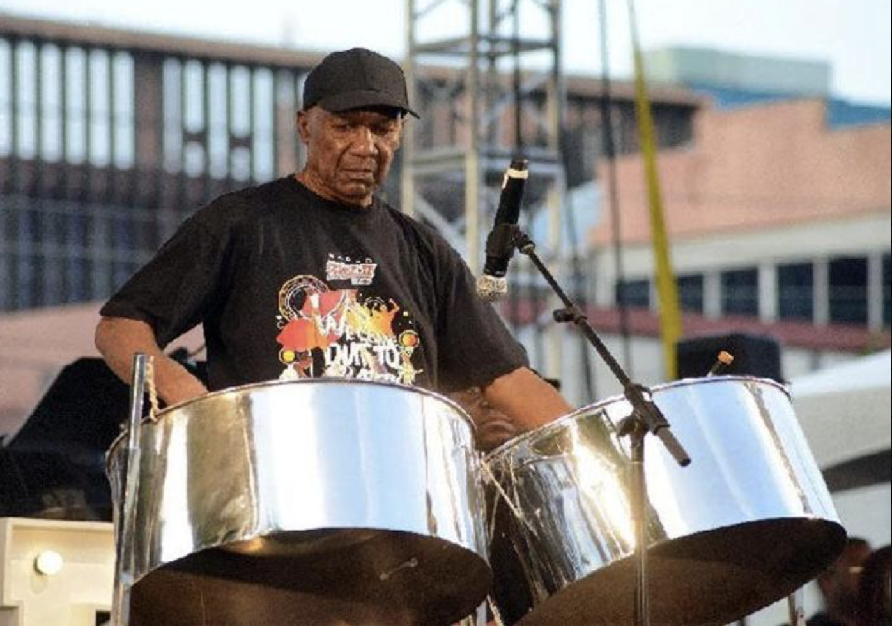

MUSIC FOR THE PAN
A Little Music Theory
The steelpan is the only acoustic instrument invented in the 20th century and is classified as a tuned hybrid percussion instrument. It is not a drum because:
1. A drum has a maximum of two heads, whereas each of the notes on the pan constitutes a different head. 2. the playing surface is not made of skin. The steelpan is an idiophone – an instrument whose body vibrates to produce sound. Other idiophones are bells, gongs, and rattles or maracas. There are eight types of idiophones decided by the Hornbostel-Sachs system: 1. Stamping – instruments that produce sound by striking an object against the ground, a hard surface, or having a surface struck by a foot, e.g., Tamboo-Bamboos. 2. Stamped – percussion instruments that produce sound by being struck against a hard surface, such as the ground or a board, e.g., Tap-dancing Boards. 3. Shaken – percussion instruments, often known as rattles, that produce sound when shaken, causing small particles or internal objects to strike against each other or the container itself, e.g. maracas and bells. 4. Concussion – musical instruments made of sonorous materials (wood, metal, bone) that produce sound by striking two or more complementary parts together, e.g., cymbals. 5. Scraped – musical instruments that produce sound through the vibration of their body when a non-sonorous object is scraped along a notched, ridged, or serrated surface, e.g., scratchers/graters and washboards. 6. Plucked – musical instruments that create sound by vibrating a thin plate, tongue, or tine fixed at one end, which is plucked by the finger or thumb, e.g., the kalimba. 7. Friction – musical instruments (designation 13 in) that produce sound by being rubbed, creating vibrations from their own substance, e.g. musical saws. 8. Struck – musical instruments that generate sound through the vibration of their entire body when struck, shaken, or scraped, requiring no strings or membranes, e.g., gongs and steelpans. The Hornbostel-Sachs system is a widely used 1914 classification scheme for musical instruments based on how they produce sound. Created by Erich Moritz von Hornbostel and Curt Sachs, it uses a decimal system (similar to Dewey Decimal for cataloguing library books) to divide instruments into five main categories—idiophones, membranophones, chordophones, aerophones, and electrophones. The system is continually revised to include new instruments. https://www.sanch.com/index.php?option=com_content&view=article&id=146:steel-pan-glosary&catid=43:articlesonsanch&Itemid=554#:~:text=By%20definition%2C%20a%20drum%20has,are%20typical%20of%20that%20familyThe steelpan follows Western music traditions with:
- a heavy focus on harmony and harmonic progression - the types of scales - a somewhat rigid structure for orchestral instruments.SCALES

An octave is an interval between two notes, with one having twice the frequency of vibration of the other.

A heptatonic scale is a musical scale that has seven pitches, or tones, per octave. Examples include:
- the diatonic scale—any seven-note scale constructed sequentially using only whole tones and half tones, repeating at the octave. It includes the major scale and its modes (notably the natural minor scale).
- the melodic minor scale, with raised 6th and 7th ascending
- the harmonic minor scale, with raised 7th note
- the harmonic major scale, like the major scale but with lowered 6th note.

A Chromatic, or dodecatonic scale, has 12 notes per octave where the interval between any two adjacent notes is a semitone.

The Treble Clef, aka the "G clef" because the curl starts on the note "G".

The Bass Clef, aka the "F clef" because the curl starts on the note "F".
THE SEVEN KEY ELEMENTS OF MUSIC
1. Melody – the musical line of the piece 2. Harmony – several notes played together. Compliments the melody 3. Rhythm – the pattern of beats and time in a piece of music 4. Form – How the music is developed and arranged 5. Timbre – What makes one sound different from another, even if it’s the same note. Gives music personality and character. 6. Dynamics – the volume of the piece, loud or soft 7. Texture – how many layers of sound are happening at once.The Circle of Fifths (and Fourths)
The steelpan, particularly the tenor pan, often uses a "Circle of Fifths" layout designed by Anthony Williams, the bandleader, pan-tuner and arranger of the Pan Am North Stars.
First conceived of by the ancient Greeks studying mathematics several thousand years ago, it was applied to the steelpan by Williams. In 1953, he presented a soprano /tenor pan where adjacent notes were laid out in intervals of a fifth to create an intuitive, logical, and ergonomic layout. Because the instrument's surface looked like a spider's web, he called it the "Spider Web Pan". This configuration: • allows for easier navigation on the steelpan • playing in different keys • finding chords, as ascending notes move in fifths (clockwise) or fourths (counterclockwise) around the pan.

The Circle of Fifths/Fourths is essential for understanding the layout of many modern steel pans, helping musicians connect music theory with the physical layout of the instrument.
The Music-Makers

Pan players and lovers began designing music specifically for the pan as far back as the 1950s.
Ray Holman composed his first piece titled “Ray’s Saga” for Invaders in 1961, and came third in the 1972 Panorama competition with his composition Pan on the Move, played by Starlift Steel Orchestra.

Other pannists have followed in Dr Holman’s footsteps, most notably Len “Boogsie” Sharpe, who started out with Starlift under Holman, and is now Captain of Phase II Pan Groove. Boogsie was the first to win Panorama with an “own tune”, This Feeling Nice, sung by calypsonian Denyse Plummer in 1987.
To date, the only other composer to win with an own tune was Pelham Goddard, whose composition A Happy Song, performed by Exodus, won in 2001.

Of course, no mention of music for pan would be complete without mention of Lord Kitchener! The Grandmaster ranks as the calypsonian most played by steelbands with songs such as Pan in A Minor, Bees Melody, Pan in Harmony, and many others. His compositions were known for their melodic structure, suited for the staccato, rhythmic nature of steelpans.
Think you've mastered this topic?
Test Your Knowledge →